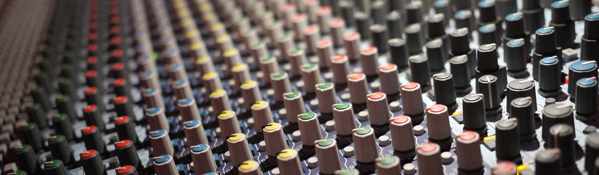

Service
Service after the sale is an integral part of our business philosophy. An investment in an equipment purchase or installation from VPGT is an investment in our customer service and techincal support. Vision is happy to answer any questions reguarding our services feel free to contact us via e-mail or phone.
Studio Productions

Vision Maintains a comprehensive audio, video, and Midi recording studio, featuring analog and digital multiple track recording formats and using state of the art equipment.
Studio Equipment:
Akai
AKG
Alesis
Amek
Aphex
Canon
DBX
Drawmer
Genelec
Lexicon
Neve
Shure
Sony
Tascam
Yamaha
Professional instument rentals also avalible:
Ampeg
EMU
Fender
Ludwig
Marshall
Ovation
Paul Reed Smith
Tama
Yamaha